Barcelona ·
⛈ Time Remaining
2:00
Drag a solution from the tray onto a block. Drag a placed card to another block to move it, or back onto the tray to remove it.
Mitigate 50% of the runoff before the storm ends, without going over budget.
Mitigate 50% of the runoff before the storm ends, without going over budget.